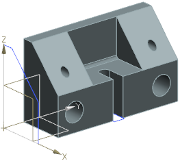
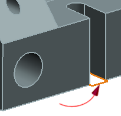

为固定颚组件(fixed jaw)新建两个引用集
您将为 des02_fixed_jaw 创建两个新的引用集，您不想要自动添加组件到新建的引用集中。
-
将 des02_fixed_jaw 组件设为显示部件。

-
添加一个名为 sketch_1的新引用集。
-
确保自动添加组件
 复选框未被选中。
复选框未被选中。 -
确保图层21为可选并添加草图 S21_Profile 到新建的引用集中。

-
添加一个名为 sketch_2的新引用集。确保图层22为可选并添加 Sketch_000到新建的引用集中。
